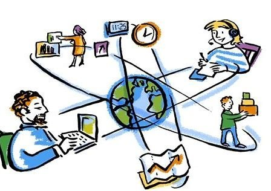
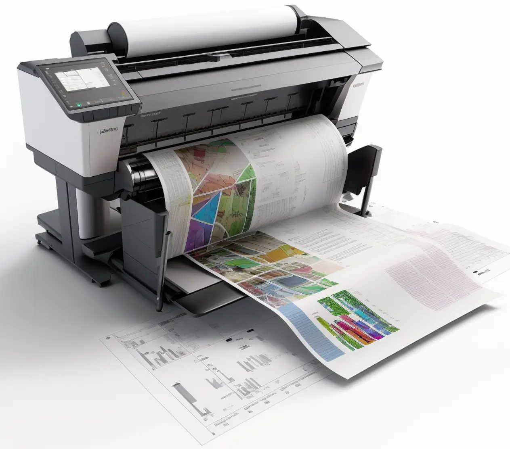
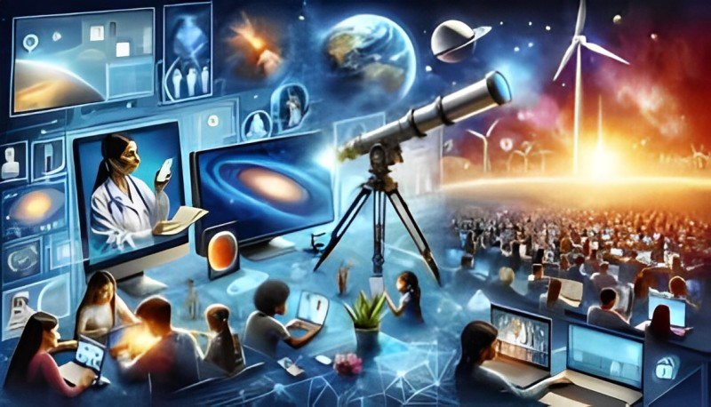

About Technology and Printers
About Technology and Printers:
Technology are those scientific, methods, instruments and
information to solve issues, so, technology are those tools,
methods and information which makes our life easier. It includes
wide variety of objects and procedures to make our life easier
and to improve our life style.
The device that transfers data from your computer to paper is
called a printer. It can print characters, digits, images, or
patterns. Moreover, certain printers support color printing.
Here are some of the key aspects of technology:
-
Information technology (IT): is the process of storing,
processing, transmitting, and retrieving data by the use of
computers, software, networks, and other electronic devices.
It covers topics including networking, cybersecurity,
software development, and computer science.
-
Biotechnology: Biological systems, organisms, or their
derivatives are used in biotechnology to create new
technologies for a range of uses in industry, agriculture,
and medicine.
-
Robotics: This field combines computer science, electronics,
and mechanical engineering to design, construct, and operate
robots. Robots are used in various industries, including
manufacturing, healthcare and exploration.
-
Communication Technology: Communication Technology are those
technology which can transfer information across large
distance for example: telecommunications, satellites and
wireless communication system.
-
Artificial Intelligence (AI): AI are those computers that
can perform the task that requires human intelligence AI is
still in Developing phase but throughout the years AI has
been improving a lot.

Positive impact of technology and printer :
The positive impact of technology are :
Efficiency and Productivity: Technology has significantly
improved efficiency and productivity in both daily life and
business operations.
Communication: The advent of the internet and various
communication technologies has transformed the way people
interact. Instant messaging, video calls, and social media
have made communication faster and more accessible.
Access to Information: Technology has democratized access to
information. The internet serves as a vast repository of
knowledge, empowering individuals to learn, research, and stay
informed.
Globalization: Technology has played a crucial role in the
globalization of businesses. E-commerce platforms, digital
marketing, and online transactions have enabled businesses to
reach a global audience and operate on an international scale.
The positive impact of Printer are :
Prints documents of the highest quality: A printer can create
papers of the highest quality, improving readability and
presentation by producing text that is crisp and colorful
visuals.
Fast and effective : It works quickly and effectively, cutting
down on the amount of time needed to prepare your documents.
Simple functions and intuitive user interface make printers
suitable for even the most inexperienced users.
Reasonably priced printing : Printing is a cost-effective
solution for both personal and business use because of its
reasonable cost. Printing digital content to a physical copy
gives you a concrete backup or point of reference. Printers
enable this.
Provide job opportunity to people : Printer has provided job
opportunity to many people , People can earn by printer by
opening a printer shop in their studios.
Communication: The advent of the internet and various communication technologies has transformed the way people interact. Instant messaging, video calls, and social media have made communication faster and more accessible.
Access to Information: Technology has democratized access to information. The internet serves as a vast repository of knowledge, empowering individuals to learn, research, and stay informed.
Globalization: Technology has played a crucial role in the globalization of businesses. E-commerce platforms, digital marketing, and online transactions have enabled businesses to reach a global audience and operate on an international scale.
Fast and effective : It works quickly and effectively, cutting down on the amount of time needed to prepare your documents. Simple functions and intuitive user interface make printers suitable for even the most inexperienced users.
Reasonably priced printing : Printing is a cost-effective solution for both personal and business use because of its reasonable cost. Printing digital content to a physical copy gives you a concrete backup or point of reference. Printers enable this.
Provide job opportunity to people : Printer has provided job opportunity to many people , People can earn by printer by opening a printer shop in their studios.
Negative impact of technology and printer :
Negative impact of technology :
Job Displacement: Automation and artificial intelligence have
led to job displacement in certain industries.
Privacy Concerns: The increasing reliance on technology has
raised concerns about privacy. Data breaches, surveillance,
and the collection of personal information by tech companies
have sparked debates about the balance between convenience and
privacy.
Social Isolation: While technology connects people across the
globe, it can contribute to social isolation on an individual
level. Excessive use of digital devices may lead to reduced
face-to-face interactions and a sense of disconnection.
Cybersecurity Threats: The interconnected nature of digital
systems exposes individuals and businesses to cybersecurity
threats.
The negative impact of technology and printer are :
Can be costly to maintain - Over time, printer maintenance
expenses, such as repairs and routine servicing, can mount up.
Uses a lot of energy: They have a reputation for using a lot
of energy, which might result in higher power costs.
Prone to technical problems: Paper jams and connectivity
problems are frequent printer-related technical issues that
might cause interruptions.
Uses a lot of paper - Printers can contribute to excessive
paper use, which is costly and not good for the environment.
Expensive ink or toner replacements: Frequently replacing ink
or toner can be expensive, particularly for prints of a high
caliber.
Privacy Concerns: The increasing reliance on technology has raised concerns about privacy. Data breaches, surveillance, and the collection of personal information by tech companies have sparked debates about the balance between convenience and privacy.
Social Isolation: While technology connects people across the globe, it can contribute to social isolation on an individual level. Excessive use of digital devices may lead to reduced face-to-face interactions and a sense of disconnection.
Cybersecurity Threats: The interconnected nature of digital systems exposes individuals and businesses to cybersecurity threats.
Uses a lot of energy: They have a reputation for using a lot of energy, which might result in higher power costs.
Prone to technical problems: Paper jams and connectivity problems are frequent printer-related technical issues that might cause interruptions.
Uses a lot of paper - Printers can contribute to excessive paper use, which is costly and not good for the environment.
Expensive ink or toner replacements: Frequently replacing ink or toner can be expensive, particularly for prints of a high caliber.

Technology impact on daily life and Business :
Daily Life: Technology has the broad category of tools,
programs, systems, and technologies that are used to improve
communication, efficiency, and production. ranging from laptops
to tablets, smartphones, and streaming gadgets , advancement in
technology has led to a communication revolution that has
changed the way of people connect with each other. The public
today has more access to knowledge and education thanks to
technology. Nearly anybody may quickly and readily obtain
instructional information thanks to the internet. The
introduction of technology has made it easier and easier to
increase productivity and streamline daily operations. The
amount of technology in today's lifestyle cannot be adequately
expressed because it provides a multitude of instruments for
automating repetitive tasks.
Business: In the business sector, technology has
transformed operations through digitization, data analytics, and
automation. As technology becomes even more advanced, its role
with businesses will continue to grow. Thanks to information
technology now it's easier for companies to do business across
the world. Emails , text , instant messaging websites etc. has
helped business to communicate to international companies
quicker and in a more effective way. Technology has helped
business by providing storage and security to their data. Users
can remotely upload and view ,store and retrieve data as needed.
Impact of Printer in Business :
There is a huge impact of the printer in Business. in order to create copies of papers like reports , contracts , presentations and marketing materials, printers are necessary. This makes it simple to share and distribute information in conferences, meetings. For the creation of marketing materials like flyers, banners, posters, and business cards, printers are essential. These resources are crucial for building a brand's awareness in the marketplace and promoting goods and services. Printers improve productivity by making tangible copies of documents easily accessible. This is especially crucial in settings where signatures, evaluations, and other procedures call for paper copies. In conclusion, printers affect businesses in a variety of ways, affecting branding, compliance, and communication among other things. Printers are essential tools for upholding professionalism and efficiency in company operations, even in the face of a shift toward digitalization in many areas.

